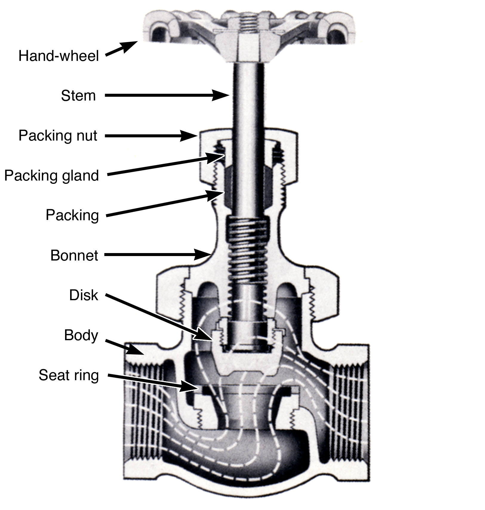
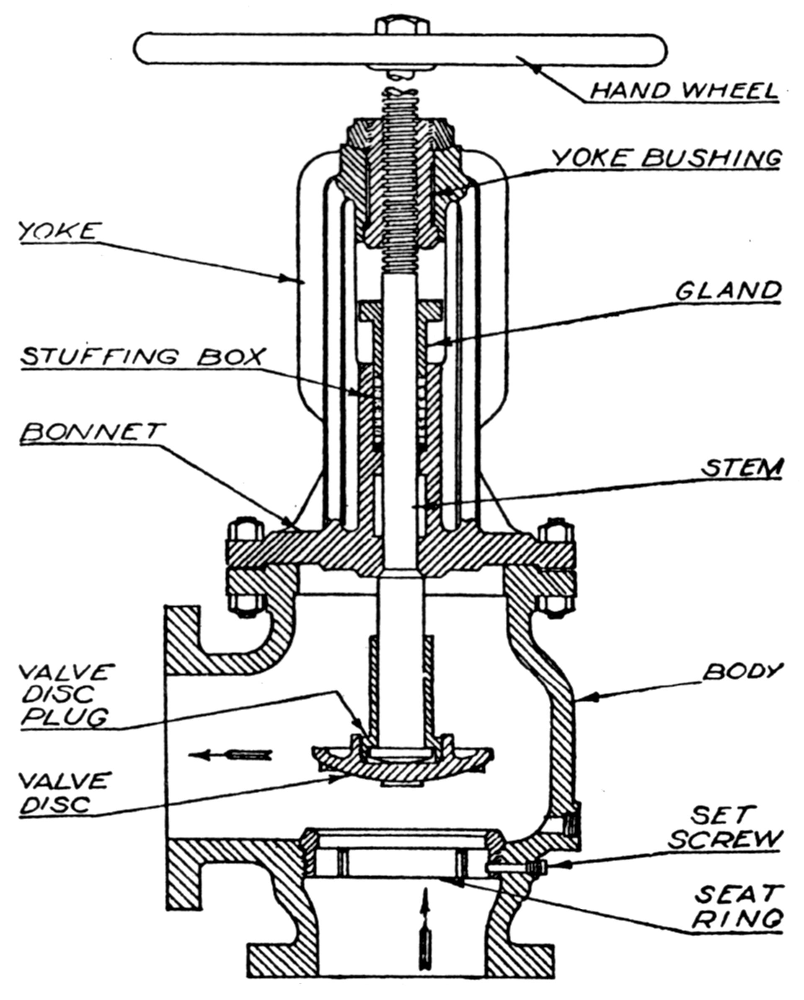

Globe valves are used in throttling applications, that is, anytime you want to regulate or control the amount of liquid flowing through a system, you could select a globe valve. A bathroom sink faucet or a garden hose spigot are common examples of globe valves found around the house. In a globe valve, the moving part (called the valve disk) blocks an opening in the valve (called the seat) to shut off flow, and when the valve stem is turned, the disk moves away from the seat – in the path of the fluid flow – as the valve is opened. To close the globe valve, the disk is moved back towards the seat until they touch, seal, and stop the fluid flow through the valve.

Figure5.2.2.Globe Valve
Construction.
Globe valves are designed for tight closure and throttling applications. When a globe valve is used to throttle or regulate fluid flow, the disk surface that closes against the seat should be made from metal, not synthetic materials. Throttling a fluid creates erosion (wearing away) of the disk surface and the seat surface that the fluid flows between. This erosion may show up as general roughness or as small grooves cut across the surfaces of the seat and disk, called wire drawing. These defects on the precisely machined surfaces of the seat and disk result in leakage when the valve is closed. In service where erosion will be a problem, the seat and disk can be fabricated from very hard materials, such as stellite, to extend the life of the seat and disk contact surfaces.
The valve body contains the internal opening that the fluid flows through. It is called the seat if the opening is machined directly into the valve body material. It is called a seat ring if it is a separate and replaceable part from the valve body. Replaceable seat rings are generally manufactured from harder, longer wearing materials than the valve body to be more resistant to fluid erosion at this location. Seat rings may be retained in the valve body by machine screw threads, press fit, welding or by what is known as a shrink fit. In shrink fit applications, the machined hole in the valve body that the seat ring fits into is a few thousandths of an inch smaller in diameter than the outside diameter of the seat ring. Therefore, it is impossible for the ring to fit into the hole in the valve body. During assembly the valve body is heated, causing the machined seat ring hole to expand. The seat ring is also frozen at the same time to decrease its outside diameter. With both parts at the proper temperature, the seat ring now has an outside diameter that is smaller than the inside diameter of the machined hole in the valve body. At this point, the seat ring is placed quickly and accurately into the valve body. As the temperature of the two parts begin to equalize, the ring expands and the machined hole shrinks and places a compressive force around the outside of the ring, locking it very tightly in place.
The valve body has two external openings (and in some special valves, more) for the entrance and exit of fluid from the piping system. These openings can be connected to the piping using pipe threads, soldering, flanges, welding, or gluing.
The top of the valve body generally has an opening for the valve disk and stem to fit through. At this opening, the other sub-assembly, called the bonnet is attached.
The bonnet normally contains the equipment necessary to operate the movable disk. It is attached to the body by machine screw threads or flanges . Large valves and valves in high pressure service normally have a gasket between the bonnet and the body made from sheet packing, flat metallic rings or spiral wound metallic type material. Small valves may have the bonnet and body sealed by a lapped metal to metal fit with no gaskets.

Figure5.2.3.Angle Globe Valve
Construction Details. Several interesting construction details are shown in Figure 5.2.3, which shows a manually operated right-angle globe valve.
This valve has a stem with a collar machined on the end. The disk slides over the collar and is retained on the end of the stem by a valve disk plug (or disk nut ) which is attached to the disk by machine threads. Since the disk plug is prevented from sliding off the end of the stem by the collar, it effectively fastens the disk to the stem. The disk nut does not lock the disk tightly to the stem, rather the disk is allowed to move slightly around the collar on the end of the valve stem. This small movement allows the disk to align itself properly with the seat as it closes for a leak free seal. In this valve, the stem is also the device that keeps the disk correctly aligned with the seat, regardless of how far the disk is removed from the seat.
Where the valve stem passes through the bonnet to the outside of the valve, the bonnet has a stuffing box, packing, and a packing gland installed to minimize fluid leakage at this point.
This valve stem uses Acme Threads, a thread type with no points, just below the point where the hand-wheel is installed. The valve stem threads engage the internal threads of the yolk bushing, which is made from a softer material than the valve stem, e.g. bronze, brass etc. If the stem has too much rotational force applied, the yoke bushing threads strip instead of the valve stem threads. The yoke bushing is a replaceable part and is screwed into the upper part of the bonnet with machine threads. When the valve hand-wheel is turned in the clockwise direction, the valve stem threads engaged with the yoke bushing threads cause the stem to move inward pushing the disk toward the seat closing the valve.
The upper part of the bonnet on this particular valve is split into two supporting uprights from the area where the packing gland is installed to the location of the yoke bushing. This type of upper bonnet design is called an outside yolk and stem.
Installation.
Globe valves are normally installed with the incoming fluid pressure applied to the bottom of the valve disk, that is, to the side of the disk that closes against the seat. The top of the disk is the side that does not close against the seat and, in most globe valves, is the side in contact with the valve stem. When fluid pressure is applied to the bottom of the disk, the pressure helps the operator open the valve, and the pressure on the valve packing is relieved when the valve is closed.
The only time a globe valve is installed with fluid pressure applied to the top of the disk is when the valve is used as a throttle valve controlling steam flow to an engine. Installed in this manner, if the disk were to become detached from the stem, the disk would be carried toward the seat by the steam flow. Even if the disk does not close tightly against the seat, it would choke off steam flow to the engine and cause it to slow down. Globe throttle valves installed in this manner are considered fail safe. If the valve was installed with the steam pressure on the bottom of the disk, and the disk became detached from the stem, the disk would be carried away from the seat by the steam flow and cause the engine speed to rise uncontrollably. The steam would also carry the disk toward the engine where it could enter and cause damage.
Globe valves cause a relatively large pressure drop in the fluid as it flows through the valve. Pressure drops are caused by the friction created when the fluid changes direction of flow through the valve. The straight globe valve, with the pipe connections 180 degrees opposite each other, has the greatest pressure drop through it due to three to five changes in direction of fluid flow. The right angle valve has a 90 degree angle between the inlet and outlet pipe connections and fluid flow only changes direction one or two times, creating less pressure drop than the straight type. Globe valves are also constructed with 45 or 60 degree angles between the stem and the outlet side of the valve. This valve design also creates less change in direction of fluid flow, reducing pressure drop through the valve.
A globe valve is fully open when the disk is raised ¼ of the diameter, \(d\text{,}\) of the seat opening. For full flow to take place through the globe valve, the area the fluid flows in through and the area the fluid flows out through must be equal. The inlet area is the hole in the seat, and is equal to the area of a circle or . The fluid flows out through the space between the top of the seat and the bottom of the disk which is the side of a cylindrical shape. The area of the side of a cylinder is equal to the circumference of the circle on the end of the cylinder times the height, \(h\) of the cylinder .
Example5.2.4.example.
If the inside diameter of the seat is 4" how far from the seat must the disk be lifted to be fully open?